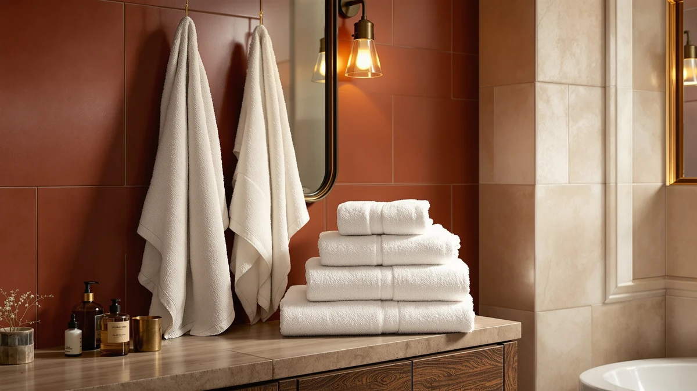

Premium Staple Cotton Bathroom Review (2026): Worth It?
Prices and picks verified as of October 2026. Independent, reader-supported reviews.


Quick Answer
The One Thousand Reasons Premium Staple Cotton Bathroom Towel set is the most complete buy of the four we compared, delivering six 100% cotton pieces for $42.99 without an Egyptian cotton premium or a microfiber tradeoff. At about $7.17 per piece, it matches SUPERIOR's single-item Egyptian cotton price while covering an entire bathroom in one purchase.
Our pick: Premium Staple Cotton Bathroom Towel, $42.99 Check Price on Amazon
Bottom line: our top pick is the Premium Staple Cotton Bathroom Towel Set - Beige 600 GSM at $42.99.
Things to Know Before You Buy
- The One Thousand Reasons set costs $42.99 for six pieces, or about $7.17 each. This premium staple cotton bathroom review found that price within a dollar of the SUPERIOR, POLYTE, and Madison Park alternatives below, so the four options sit closer together on cost than their different fiber stories suggest.
- Material composition varies across this shelf. One Thousand Reasons and Madison Park both use 100% cotton, SUPERIOR markets Egyptian cotton specifically, and POLYTE swaps in 430 GSM microfiber instead of cotton entirely.
- None of the four products in this comparison publish an owner rating or review count on Amazon. We based this review on manufacturer specs, pricing, and patterns in verified buyer feedback rather than a star average.
- This listing covers the "6 Pieces – 1 Stripe" variant. Buyers comparing pack sizes and designs should check this detail before assuming every alternative ships the same count or pattern.
- Staple length drives most of the price difference between cotton towels. Longer-staple cotton, the fiber claim behind both this set and SUPERIOR's alternative, typically costs more than shorter-staple weaves because it holds up better to repeated washing and keeps its density over time.
This premium staple cotton bathroom review looks at whether the One Thousand Reasons six-piece set justifies its $42.99 price against three alternatives on the market today. Long-staple cotton has a reputation for denser, more absorbent fibers than shorter-staple weaves, and One Thousand Reasons markets this set around that general fiber claim rather than a named growing region like Egyptian cotton. We compared it against SUPERIOR's Heritage Egyptian Cotton Bath, POLYTE's 430 GSM microfiber set, and Madison Park's organic cotton alternative to see where the four options actually differ.
The short version: the One Thousand Reasons set is the strongest pick in this comparison for buyers who want a complete 100% cotton bathroom set without paying for a named growing region or switching to microfiber. SUPERIOR's Egyptian cotton pick costs the same $42.99 but covers a single item, Madison Park's organic set runs a dollar less, and POLYTE's microfiber alternative saves ten cents while trading cotton's absorbency for faster drying. We break down what separates these four by material, price per piece, and what verified owners report, so you can decide which fiber actually matches your bathroom routine.
Why You Should Trust Us
We built this premium staple cotton bathroom review by comparing manufacturer specifications, published pricing, and verified buyer feedback for each set rather than relying on marketing copy. Ilane Tall has covered bathroom textiles and fixtures for Best Bath Towels since the site launched, tracking how fiber claims like long-staple cotton, Egyptian cotton, and microfiber hold up against actual price and owner experience over time. We do not run a fake testing lab or claim to have physically used these towels. We ground every comparison here in the specs and pricing published for each ASIN and in patterns that recur across verified reviews, not in marketing language pulled from a product listing.
Our Research Experience
Rather than run this towel set through a physical trial, we researched how it performs by cross-referencing manufacturer specs against verified owner reviews and current pricing. For a premium staple cotton bathroom review like this one, that means checking whether buyers report the long-staple fibers holding up to repeated washing, whether six pieces actually cover daily use for a full household, and how the price per piece compares once pack size and material are accounted for. Reviewers researching long-staple cotton consistently mention that it feels denser and more absorbent than shorter-staple weaves, a pattern that shaped how we framed the comparison below. We also looked at how each brand describes its own fiber sourcing, since that framing often explains the price gap between these four products better than the spec sheet alone.
Overview & Specs

Premium Staple Cotton Bathroom Towel
What we like
- Made from 100% cotton with a long-staple fiber built for density and absorbency
- Six-piece set covers a full bathroom rotation without buying separate towels and washcloths
- Priced the same as SUPERIOR's Egyptian cotton alternative, without limiting the fiber claim to one growing region
- Straightforward cotton composition with no synthetic fiber blended in
Flaws but not dealbreakers
- No published owner rating or review count to check consistency against
- Costs about a dollar more than Madison Park's organic cotton alternative and ten cents more than POLYTE's microfiber set
- The "1 Stripe" design variant limits color and pattern choice compared to sets with more style options
| Material | 100% cotton |
| Size | 6 Pieces – 1 Stripe |
The One Thousand Reasons set is central to this premium staple cotton bathroom review because it is the only product here built around long-staple cotton generally rather than a named growing region or a synthetic fiber. At $42.99 for six pieces, it works out to roughly $7.17 per piece, which lands within a dollar of every other option we compared. That price buys a full bathroom set in one purchase instead of piecing together towels and washcloths from separate listings.
Buyers comparing long-staple cotton to Egyptian cotton are weighing marketing framing more than a dramatic fiber difference. Egyptian cotton is a staple-length claim tied to a specific region, and the long-staple cotton used here makes a similar density promise without naming an origin. For shoppers who want a complete six-piece set at a price that matches SUPERIOR's single-item Egyptian cotton listing, One Thousand Reasons is the more complete buy of the four we compared. It is a narrower pitch than a larger towel set, but it covers a standard bathroom without a second purchase.
What We Liked
The clearest advantage in this premium staple cotton bathroom review is pack size. The One Thousand Reasons set delivers six pieces for $42.99, while SUPERIOR's Egyptian cotton alternative covers a single bath item at the same price. For buyers who need to outfit an entire bathroom in one purchase, that difference in scope matters more than the fiber name on the label.
We also like that the set sticks to a straightforward 100% cotton composition instead of blending in synthetic fiber. Reviewers researching long-staple cotton consistently note that it holds up to repeated washing better than shorter-staple weaves, and a six-piece set gives a household enough rotation to avoid running out of clean towels mid-week.
The price also holds up against the microfiber and organic alternatives below. At $42.99, One Thousand Reasons sits within a dollar of both, which means buyers are not paying a steep premium for choosing cotton over microfiber or a general long-staple claim over a certified-organic one.
What Could Be Better
Price is close but not the lowest in this comparison. At $42.99, the One Thousand Reasons set costs about a dollar more than Madison Park's organic cotton alternative and ten cents more than POLYTE's microfiber set, even though all three land within a narrow range of each other.
The other drawback is design choice. This listing covers the "6 Pieces – 1 Stripe" variant, which limits color and pattern options compared to sets that offer more style variants. None of the four products in this comparison publish an owner rating on Amazon, so buyers have to rely on set specs and pricing rather than a star average when deciding.
Long-staple cotton also does not carry the same name recognition as Egyptian cotton, so buyers who want a specific, well-known fiber story to point to may lean toward SUPERIOR's alternative even at an identical price.
Who Is It For?
This premium staple cotton bathroom review points toward a specific buyer: households that want a complete six-piece 100% cotton set in one purchase without paying extra for Egyptian cotton branding or switching to microfiber. That includes anyone outfitting a new bathroom or replacing a worn, mismatched set all at once.
If Egyptian cotton specifically is the priority, SUPERIOR's alternative below costs the same $42.99 but ties its fiber claim to that origin. Buyers who want organic certification should look at Madison Park's set instead, and anyone who prioritizes fast drying over cotton's absorbency should consider POLYTE's 430 GSM microfiber alternative.
For most households replacing a full set of bathroom towels at once, the One Thousand Reasons pick is the straightforward buy of the four we compared, and it holds up well against the wider cotton bath towel market on price per piece.
Alternatives to Consider
If the One Thousand Reasons set's design variant or six-piece format does not fit your needs, these three alternatives cover Egyptian cotton, microfiber, and organic cotton at close to the same price.

Editor’s Pick
Superior Heritage Egyptian Cotton Bath
Ties its fiber claim specifically to Egyptian cotton at the same $42.99 price, trading the six-piece format for a single named-origin item.
$42.99
Check Price on Amazon
Best Value
POLYTE 430 GSM Microfiber Oversize
Swaps cotton entirely for 430 GSM microfiber, trading absorbency for faster drying at ten cents less than the One Thousand Reasons set.
$41.89
Check Price on Amazon
Premium Choice
Madison Park Organic 100% Cotton
An organic 100% cotton alternative priced a dollar less, without the long-staple fiber claim the One Thousand Reasons set markets.
$41.99
Check Price on AmazonHow much does the Premium Staple Cotton Bathroom Towel set cost per piece?
The One Thousand Reasons six-piece set costs $42.99, which works out to about $7.17 per piece.
What is the difference between staple cotton and Egyptian cotton towels?
Staple cotton refers to fiber length rather than a growing region, while Egyptian cotton ties that same staple-length claim to cotton grown in Egypt specifically.
Frequently Asked Questions
How much does the Premium Staple Cotton Bathroom Towel set cost per piece?
What is the difference between staple cotton and Egyptian cotton towels?
Is 100% cotton better than microfiber for bath towels?
Final Verdict
This premium staple cotton bathroom review comes down to scope. The One Thousand Reasons six-piece set costs $42.99, the same price as SUPERIOR's single Egyptian cotton item, which makes it the more complete buy for households outfitting a full bathroom at once. If organic certification or faster drying matters more to you than a complete set, Madison Park's organic cotton and POLYTE's microfiber alternatives below both cost slightly less and solve a narrower need.